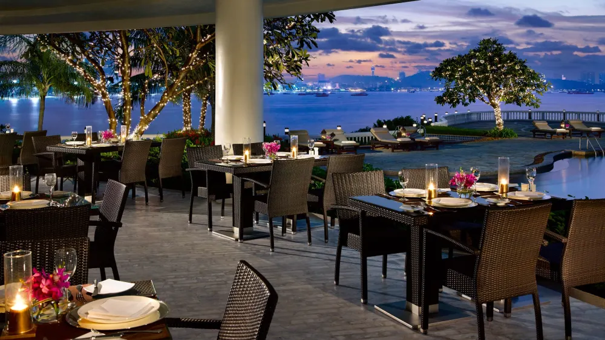
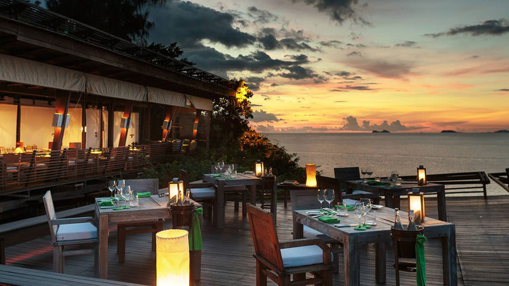
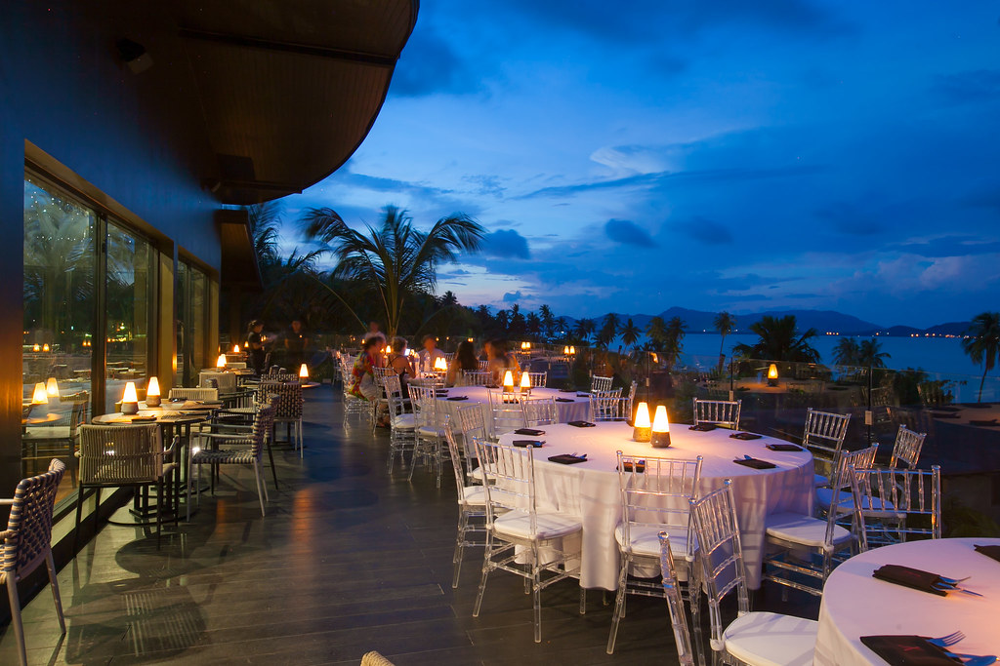
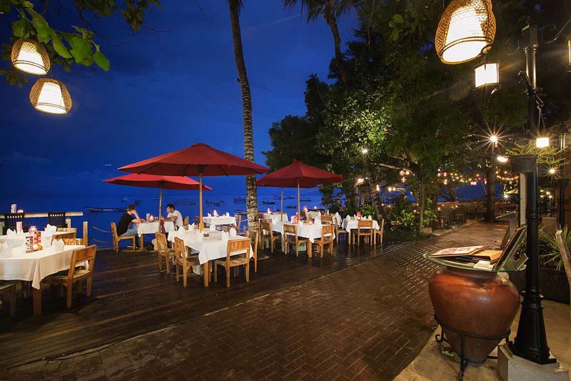

|
Welcome to Seaside Delights, an enchanting culinary haven where the art of seafood meets the serenity of the ocean. Nestled on the stunning coastline, our restaurant is a testament to the harmonious blend of exceptional cuisine and breathtaking natural beauty. With a profound passion for seafood and an unwavering commitment to excellence, we have earned our place as a beloved destination for seafood connoisseurs and nature enthusiasts alike. At Seaside Delights, we take pride in our culinary expertise and unwavering dedication to delivering an unparalleled dining experience. Our menu is a symphony of flavors, featuring a diverse array of seafood dishes that are masterfully crafted to delight your senses. From our signature grilled catch-of-the-day, which boasts a perfect balance of smoky char and tenderness, to our succulent shellfish platters and hand-battered seafood treasures, each dish tells a story of culinary mastery. We meticulously source the finest, freshest ingredients, ensuring that every plate is a testament to our commitment to exceptional quality. |
 | |||
|  |
Seaside Delights is more than just a restaurant; it is a coastal oasis that invites you to escape the ordinary. Our open-air terrace, adorned with panoramic views of the boundless sea, offers an idyllic retreat for those seeking tranquility and natural beauty. Whether you're celebrating a milestone occasion or simply indulging in a peaceful seaside lunch, our restaurant provides the perfect backdrop. Allow the rhythmic waves and mesmerizing sunsets to serenade your senses as you savor each delectable bite. At Seaside Delights, we are driven by a commitment to enhancing your overall experience. We understand that dining is not just about the food; it's about crafting memories. Our dedicated team of passionate professionals is here to ensure every aspect of your visit is nothing short of extraordinary. Whether you're joining us for an intimate dinner, a joyous family gathering, or a leisurely lunch with friends, we promise to make your time with us truly unforgettable. |
|||
|
Seaside Delights was founded in 1995 by the renowned chef, Amjad Swaifa, who had a visionary idea of merging culinary artistry with the beauty of the seaside. Since then, our restaurant has flourished to become one of the most famous dining destinations along our breathtaking coastline. Our journey began with a desire to provide the finest dining experience on the coast, achieved through meticulous attention to detail and the selection of the best ingredients. Over the years, we have evolved into a place where culinary artistry meets a serene coastal ambiance. For over a quarter of a century, "Seaside Delights" has been distinguished by its stunning dishes and exceptional service. We have witnessed continuous growth and ongoing innovations to meet the expectations of our discerning clientele. We take pride in our rich heritage and look forward to a bright future where we will continue to serve the most delectable cuisine and create beautiful moments by the seashore. Our history is part of our success story, and we are grateful to all who have given us the opportunity to serve them and be part of their wonderful experiences. |
 | |||
|  |
We cordially invite you to embark on a culinary journey like no other at "Seaside Delights." Nestled along the picturesque coastline, our restaurant offers an enchanting blend of delectable seafood, breathtaking ocean views, and warm hospitality. Whether you're a seafood enthusiast, a nature lover, or simply seeking a memorable dining experience, we have crafted the perfect setting for you. At "Seaside Delights," every visit is a celebration of the senses. Our menu boasts a curated selection of seafood delicacies, expertly prepared to tantalize your taste buds. From succulent grilled catches to irresistible shellfish platters, each dish is a testament to our commitment to culinary excellence. As you savor your meal, be captivated by the soothing sound of the waves and the golden hues of the setting sun, creating an ambiance that elevates your dining experience. Our dedicated team is here to ensure your every need is met, making your visit truly unforgettable. Whether you're celebrating a special occasion, enjoying a romantic evening, or simply craving the finest seafood, "Seaside Delights" welcomes you with open arms. Join us and discover the magic of seaside dining. Reserve your table today and let us make your moments by the sea extraordinary. |